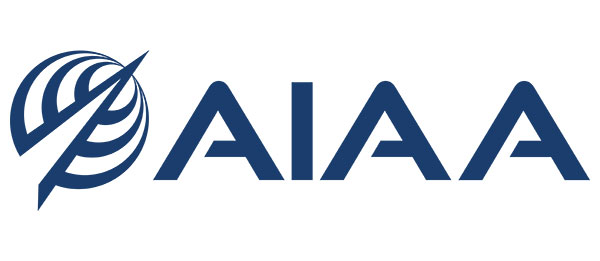

Published Author
Prediction of Performance and Noise of a Small Quadrotor Using CHARM
This paper highlights mid-fidelity prediction of quadrotor performance and tonal noise, comparing simulation results against NASA experimental data. My work in the lab supported the blade geometry processing and thickness-noise analysis that contributed to the final results.
Abstract
Mobility (UAM) vehicle and drone delivery industries. Rapid trend prediction of performance and noise is useful during the design phase of any vehicle and is necessary for informing advanced vehicle control. The simulation tool CHARM coupled to PSU-WOPWOP offers a mid-fidelity prediction capability applicable to these industries. Its ability to capture the performance and noise trends for the SUI Endurance small quadrotor is presented. The effect of some of the software’s modeling parameters is investigated. Traditional convergence is not obtained for some parameters. Still force and moment predictions are shown to be mostly within 5% and 10% respectively and the main tonal noise predictions are within 1 dB of each other. When compared to performance and noise data from NASA experiments, trends are captured while the moment values are inaccurate. When focusing on the tonal noise, there is an underprediction of several dB. This is most likely because the wake interactions with other rotors are not fully modeled with the method.